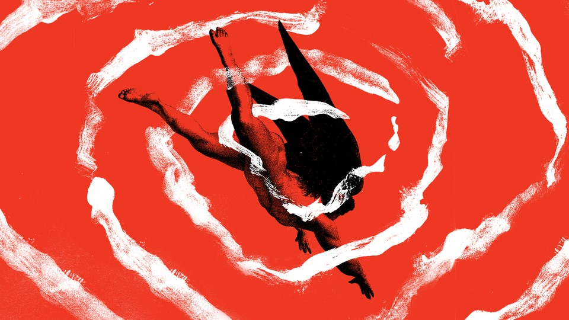

| 文章 | 章节 | 下一项 |
Rewriting the Book of Genesis
Cast into political exile, and into darkness by his failing eyesight, John Milton was determined to accomplish “things unattempted yet in prose or rhyme.”
by James Parker

Take us back, little time machine, with your bleepings and your flashings; take us back to crusty old London in the late 1650s, so we can clap the electrodes onto the sleeping head of blind John Milton. Let’s monitor the activity in the poet’s brain. Let’s observe its nocturnal waves. And let’s pay particular attention as his sightless eyes begin to flick and roll in deepest, darkest, dream-friendliest REM sleep, because it is at this point (we presume) that the spirit whom he calls Urania, a nightly visitor with a perfect—not to say Miltonic—command of blank verse, will manifest before his unconscious mind and give him the next 40 lines of Paradise Lost.
Is that really how it happened? Is it possible that the most monumental and cosmically scaled poem in the English language, nearly 11,000 lines of war in heaven, snakes in the garden, and the slamming of the gates behind Adam and Eve, was dictated by a voice in a dream? Did Milton—to put it another way—write Paradise Lost in his sleep? We’ve got only his word for it, of course, although it appears to be a fact that he arose each morning with lines of verse fully formed and ready for transcription. (For this task Milton seems to have availed himself of whoever happened to be around—to have “employed any casual visitor in disburthening his memory,” as Dr. Johnson wrote in his short biography.) Another fact: If he tried composing later in the day, he’d have no luck.
The conditions of the composition of Paradise Lost, we learn from Joe Moshenska’s new Making Darkness Light: A Life of John Milton, are a crucial part of the poem itself. Supernaturally inspired, spoken in darkness to one who lived in darkness, to an elected poet who also happened to be a disappointed revolutionary, this epic about the Fall of Man intimately concerns the fall of a man—one John Milton—and what he chose to do about it.
So who was he? Moshenska, in 11 chapters, gives us 11 ways of looking at Milton, from the brilliant son of a musician father to the traveling polyglot (he visits Galileo in Tuscany) to the theological crank to the ferocious propagandist pamphleteer to the blind man sitting in his house, reeling off the staves of his great poem. His times were, to put it mildly, rather polarized: He was 36 when Oliver Cromwell smashed the forces of King Charles at the Battle of Naseby. Milton, as a radical Protestant and a republican, was on Cromwell’s side. It’s an item worth remembering about the English that they once chopped their own king’s head off; John Milton was very much in favor of said head-chopping. His 1649 tract The Tenure of Kings and Magistrates proclaimed the lawfulness of trying and putting to death “a Tyrant, or wicked King.” It was published shortly after Charles’s execution in London, by which time Milton was well on his way to a post in the new republican government: secretary for foreign tongues to the Council of State.
Brief triumph. To quote the not-completely-un-Miltonic English band The Fall, “Over the hill goes killer civil servant.” Over the hill goes the regicidal secretary. By 1652 his eyesight, already weak, is completely destroyed: Milton is blind. His enemies will exult in his infirmity. In 1658 Cromwell dies; in 1660 Charles II is restored to the throne, and Milton goes into hiding. Reappearing, he is arrested and briefly imprisoned. He returns to his house and sits there.
When exactly he began work on Paradise Lost, or it began work on him, is unclear. (“It seems likely,” writes Moshenska, “that the bulk of it was composed between the late 1650s and the early 1660s.”) The poem’s first sentence (“Of Man’s first disobedience,” it begins) is an exhibition of pure technique and audacity. Like a long electric-guitar note fringed by slowly intensifying feedback, it builds through five lines, shimmering over the line breaks, before it arrives at its verb—sing—and goes another 11 lines before it slides ringing against its period, fittingly concluding with the promise of “things unattempted yet in prose or rhyme.” T. S. Eliot, who held that Milton had generally been a bad influence on English poetry, testified nonetheless to the “peculiar feeling, almost a physical sensation of a breathless leap,” produced in him by these extended Miltonic runs.
The action begins in hell, as hell gets to know itself for the first time. The rebel angel Satan and his legions, defeated by God, have been tossed off the shining battlements of heaven, “hurled headlong flaming from the ethereal sky,” and are now lying stunned and smoldering in a region of nameless, measureless, combustible obscurity: “no light, but rather darkness visible.” Already the poem is moving in an obsessive but magisterially controlled pattern between extremes of light and dark, of seeing and unseeing, as Milton begins—via a supreme creative act—to reconcile his physical blindness with the apocalyptic magnificence of his inner vision.
Milton believed, utterly, in a humorless and imperial God; he also knew that he was a genius. “You ask what I am thinking of?” he once wrote to a friend. “Of immortality! And what am I doing? Growing my wings and meditating flight.” As a young man he could hear the wind woofing under his pinions. And here he was, in his 50s, rewriting the Book of Genesis. How to cope, morally, with the godlikeness of his own imagination, and the scale of his ambition? Give it to a fallen angel. Give it to one who, like him, had been flung from the ramparts into exile, into a chasm as dark as no sight at all, with defeated armies spread around and only his magnificent ego to sustain him.
“A mind that dilates outward as far as it can take itself in every direction so that it can retract, back to where it started, but with a new sense of its own being”—this, Moshenska writes very beautifully, is “the mind that Milton both desires and wants his audience to desire.” The shadow image of this mind, in Paradise Lost, is Satan in flight: an autarch in the abyss, superbly aloft, beating his way in splendor through total celestial-political isolation. His revolution has failed, but his wings are spread. “The mind is its own place,” Satan tells his sidekick, Beelzebub, and when he takes off on his anti-mission to the just-created Earth he seems to be mental power itself: He “puts on swift wings, and toward the gates of hell / Explores his solitary flight: sometimes / He scours the right hand coast, sometimes the left, / Now shaves with level wing the deep, then soars / Up to the fiery concave towering high.” They are fantastically exciting, these Satanic zoomings. They are what make the first four books of Paradise Lost such a gorgeous and perspective-demolishing experience: The mind’s eye must constantly refocus. But guess what, Satan—wherever you go, there you are. “Which way I fly is hell,” laments the arch-demon after a bit more veering and swooping, “myself am hell.”
Read: What’s so ‘American’ about John Milton’s Lucifer?
Because Milton’s theology and perhaps his soul demanded it, Satan had to be reduced. Imagination gone aerial in the gulf of blindness—it had to be brought back under the eye of God. What Samuel Taylor Coleridge, in his notes on Paradise Lost, calls “the alcohol of egotism” had to be resisted. Satan journeys vastly through the void, wings beating; having reached the Garden of Eden, he assumes for his first encounter with Eve the form of a toad. Ithuriel and Zephon, angelic bouncers on the orders of Gabriel, are not deceived: Ithuriel gives the toad a poke with his spear. Stung by the spear tip, Satan, “as when a spark / Lights on a heap of nitrous powder,” flares up into his own satanic nature, his own shape. He is revealed. The angels step back, “half amazed / So sudden to behold the grisly king.” Only half-amazed: The devil, wings folded, has been cut down to size.
This article appears in the January/February 2022 print edition with the headline “John Milton’s Hell.”
This article was downloaded by calibre from https://www.theatlantic.com/magazine/archive/2022/01/john-milton-making-darkness-light/620847/
| 文章 | 章节 | 下一项 |